REELS / 01Instagram
POV:當老細叫我宣傳明報出版社攤位
加载 Instagram 预览
如预览未能显示，可前往 Instagram 查看原帖。
Portfolio
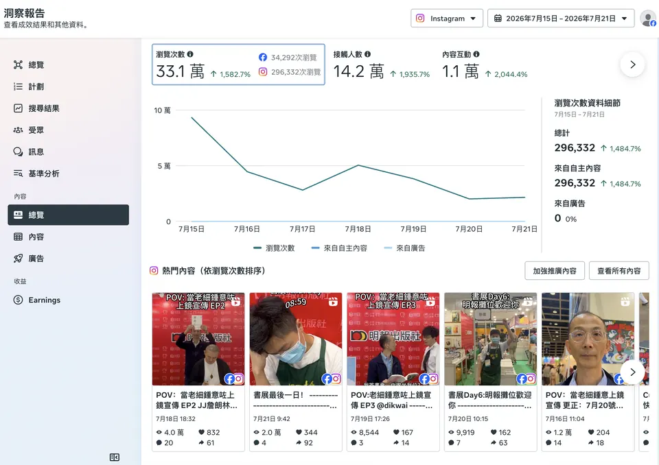
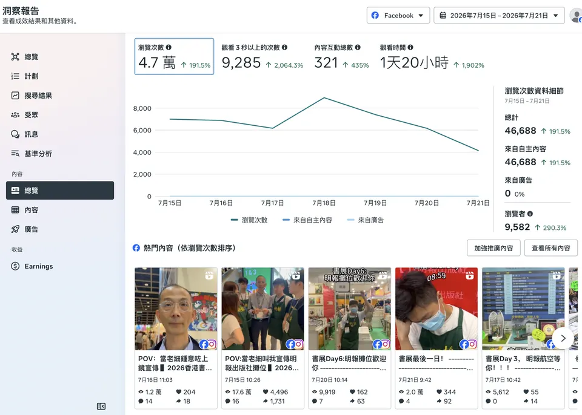
我的职责负责编剧及参演，使用 CapCut、Final Cut Pro 剪辑，并通过 Meta Business Suite 发布；书展短片每条由拍摄到发布约 30 分钟。
如预览未能显示，可前往 Instagram 查看原帖。
如预览未能显示，可前往 Instagram 查看原帖。
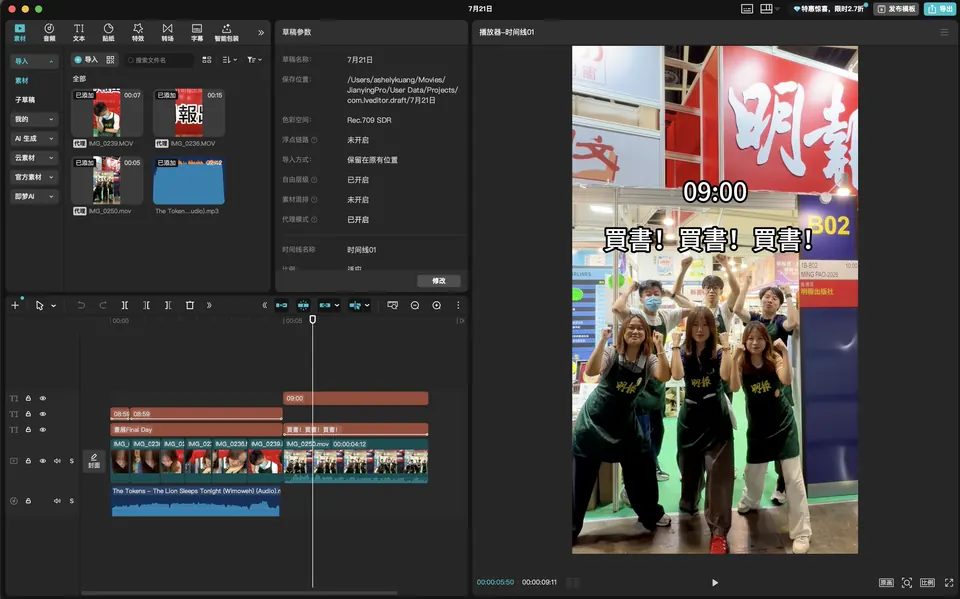
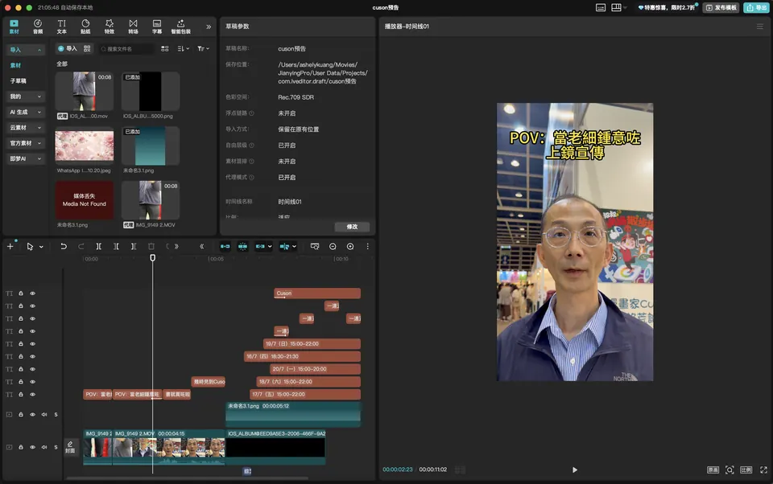
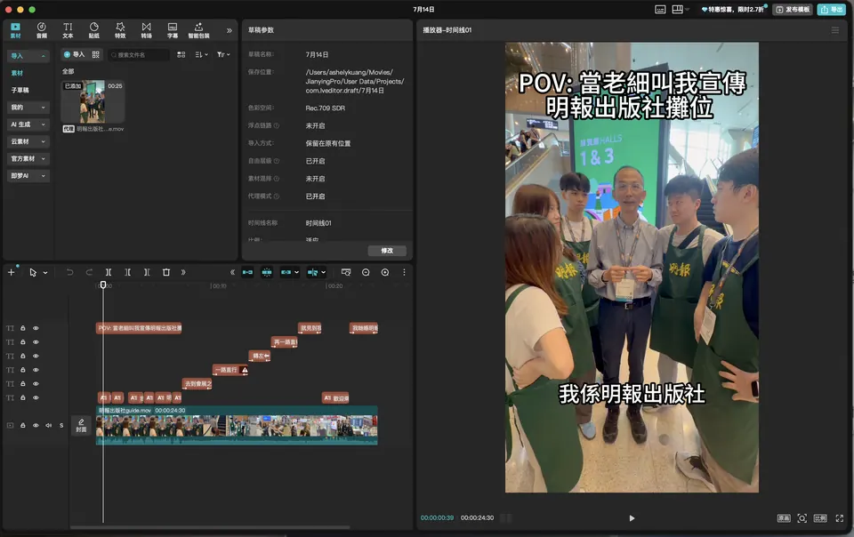
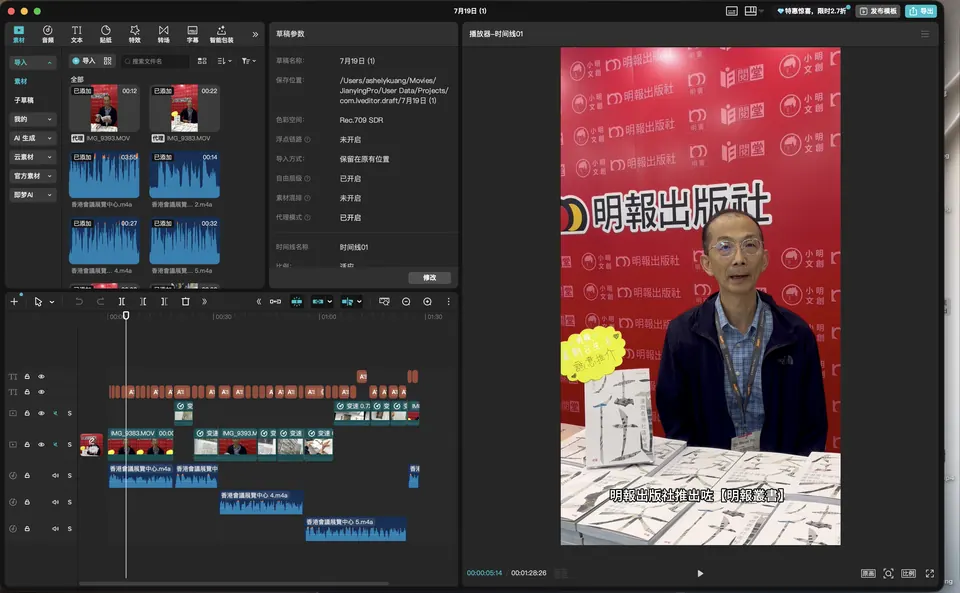
我的职责撰写文案、排版及编排广告刊登日期。
我的职责参与品类讨论及订购。
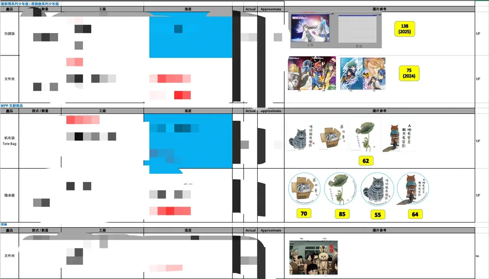
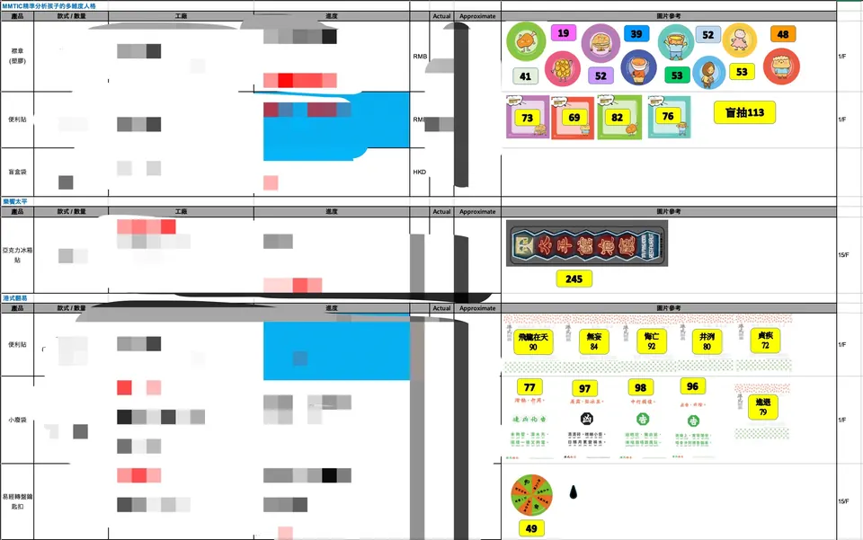
我的职责负责创意构思、文案撰写及初步布局草图设计。
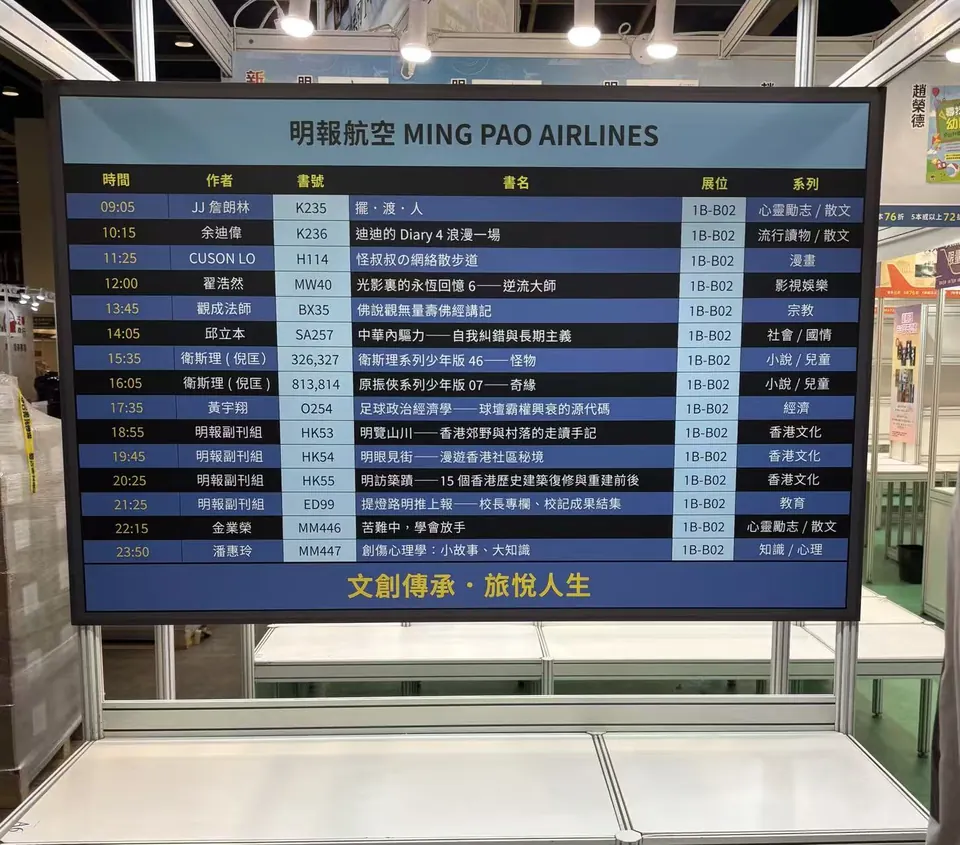
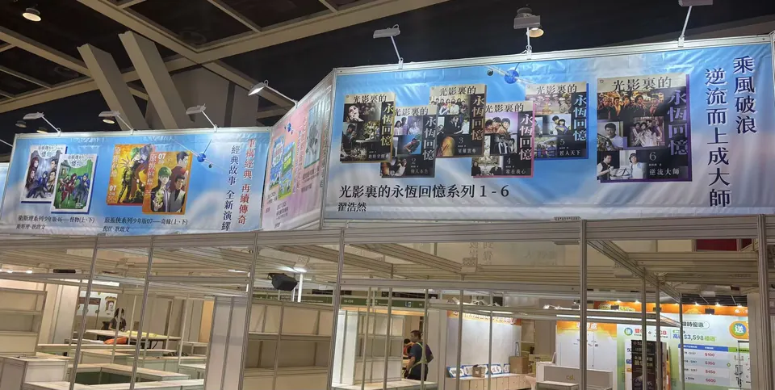
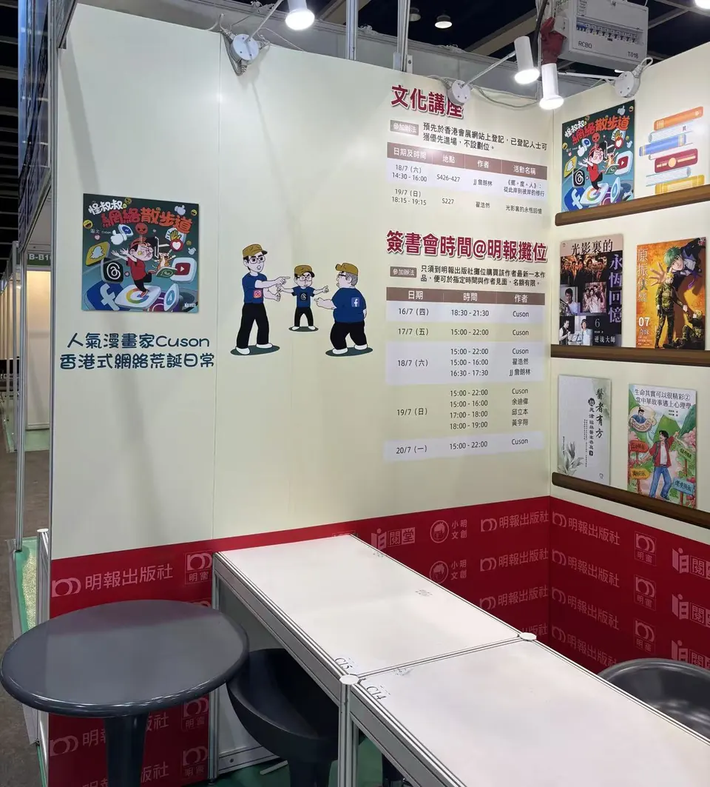
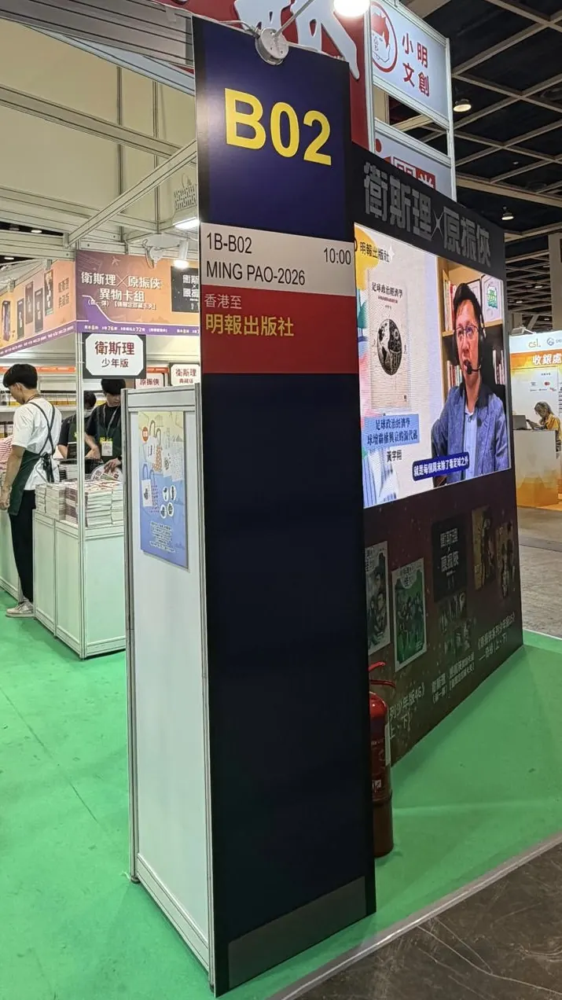
我的职责负责规划活动流程、准备物料、邀约客人、预订场地及活动执行。
我的职责负责用户调研、收集数据、与外部企业客户初步洽谈，以及撰写会员权益规则和客服文档。
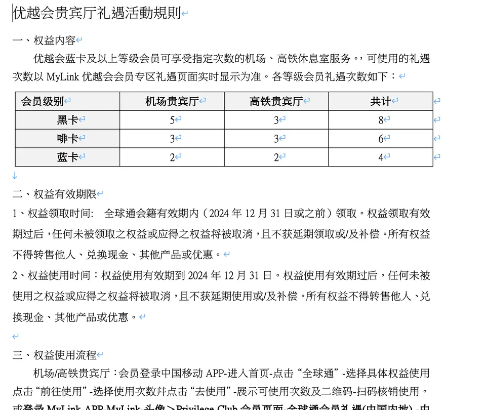
工商管理学院 · 应用经济学理学硕士
2026 年 9 月社会科学学士（经济学）
2025 年 5 月・全额奖学金经济学系交换生
2024 年 9–12 月Canva · CapCut · Final Cut Pro · Premiere Pro · Photoshop · Meta Business Suite · MS Office · Stata · ChatGPT · Claude
粤语、普通话：母语・英语：IELTS 6.5
02
社交媒体帖文
+我的职责使用 Canva 设计、撰写文案，并通过 Meta Business Suite 排程及发布。
2026香港书展宣传
加载 Instagram 预览 +
如预览未能显示，可前往 Instagram 查看原帖。
新书宣传《原振俠系列少年版07》
加载 Instagram 预览 +
如预览未能显示，可前往 Instagram 查看原帖。
新书宣传《迪迪的Diary4 浪漫一場》
加载 Instagram 预览 +
如预览未能显示，可前往 Instagram 查看原帖。
新书宣传《醫言有理》
加载 Instagram 预览 +
如预览未能显示，可前往 Instagram 查看原帖。
文化讲座宣传1
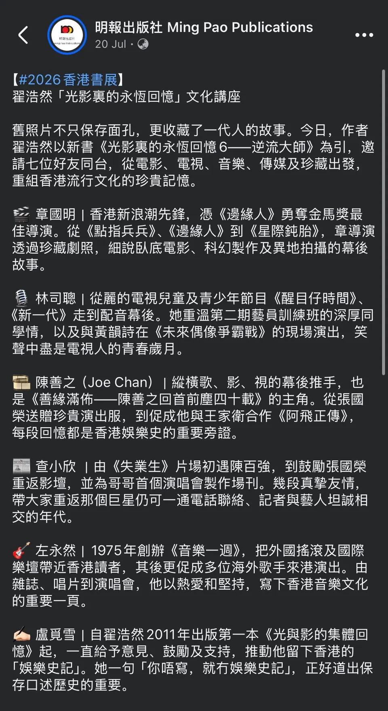